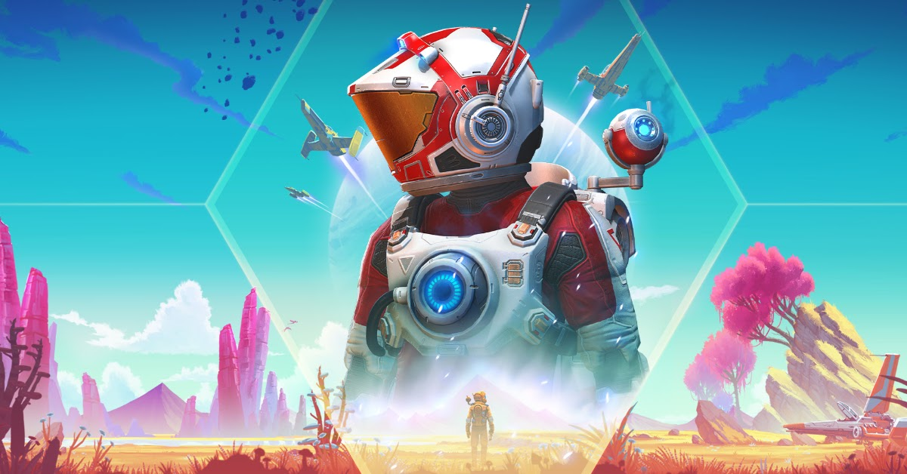
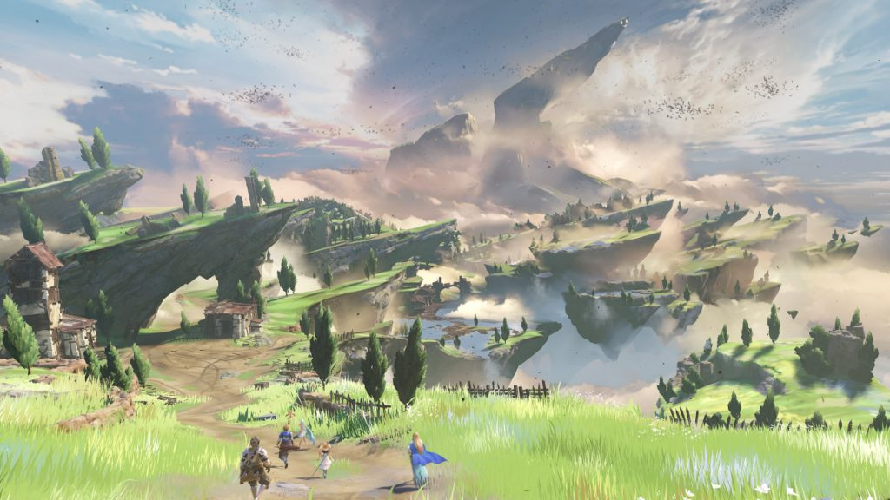
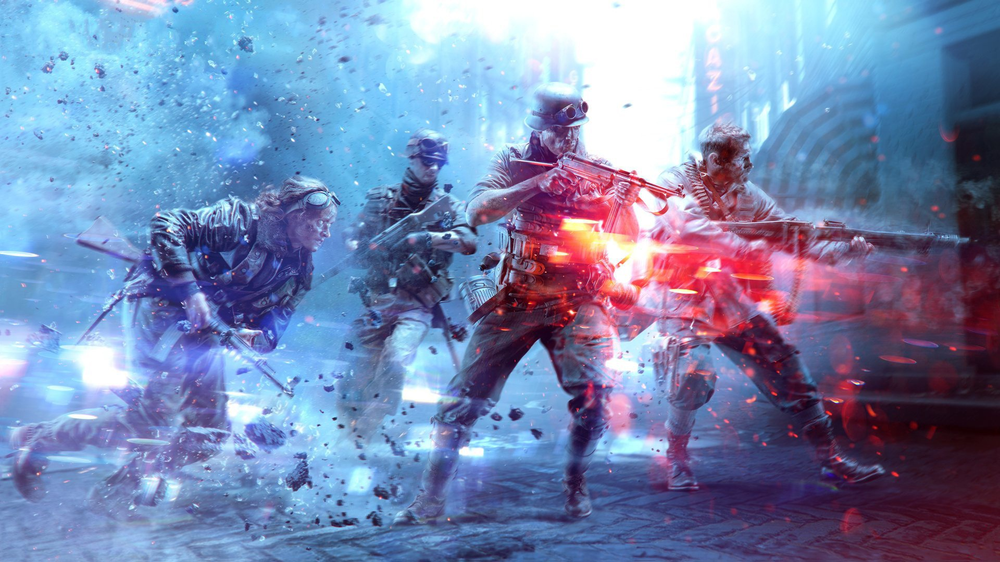

Welcome to my district! This is where I inception people about great games.
Welcome to my district! This is where I inception people about great games.
Welcome to my district! This is where I inception people about great games.
 Sci-fi games explore our cynical fears and optimistic dreams about the future and technology.
 The fantasy game genre takes us back to simpler times of mythology and nature.
 Experience the Second World War on the ground, at sea, or in the air.